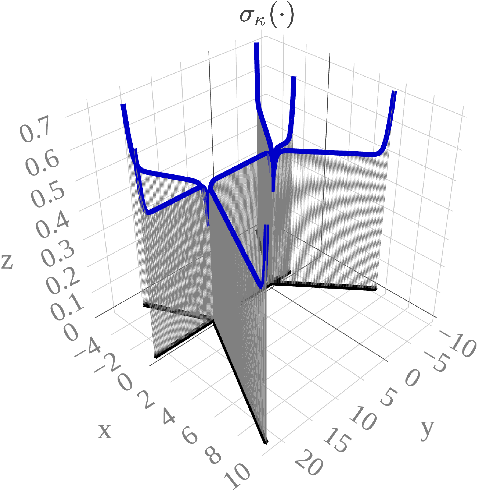

Go back to the Contents page.
Press Show to reveal the code chunks.
Below we set some global options for all code chunks in this document.
# Set seed for reproducibility
set.seed(593)
# Set global options for all code chunks
knitr::opts_chunk$set(
# Disable messages printed by R code chunks
message = FALSE,
# Disable warnings printed by R code chunks
warning = FALSE,
# Show R code within code chunks in output
echo = TRUE,
# Include both R code and its results in output
include = TRUE,
# Evaluate R code chunks
eval = FALSE,
# Enable caching of R code chunks for faster rendering
cache = FALSE,
# Align figures in the center of the output
fig.align = "center",
# Enable retina display for high-resolution figures
retina = 2,
# Show errors in the output instead of stopping rendering
error = TRUE,
# Do not collapse code and output into a single block
collapse = FALSE
)
# Start the figure counter
fig_count <- 0
# Define the captioner function
captioner <- function(caption) {
fig_count <<- fig_count + 1
paste0("Figure ", fig_count, ": ", caption)
}
# Define the function to truncate a number to two decimal places
truncate_to_two <- function(x) {
truncated <- floor(x * 100) / 100
sprintf("%.2f", truncated)
}Below we load the necessary libraries and define the auxiliary functions.
library(rSPDE)
library(MetricGraph)
library(sp)
library(dplyr)
library(plotly)
library(scales)
library(patchwork)
library(tidyr)
library(here)
library(rmarkdown)
# Cite all loaded packages
library(grateful)
library(slackr)
source("keys.R")
slackr_setup(token = token) # token comes from keys.R## [1] "Successfully connected to Slack"capture.output(
knitr::purl(here::here("functionality1.Rmd"), output = here::here("functionality1.R")),
file = here::here("old/purl_log.txt")
)
source(here::here("functionality1.R"))Again, recall the SPDE \[\begin{equation} \label{eq:spde} \tag{1} (\kappa^2 - \Delta_{\Gamma})^{\alpha/2}(\tau u) = \mathcal{W}, \quad \text{on $\Gamma$}, \end{equation}\] where \(\tau\) and \(\kappa\) are non constant.
One feature of the Whittle–Matérn fields on metric graphs is that they are inherently non-isotropic (Bolin, Simas, and Wallin (2024a)). Their marginal variances and practical correlation ranges change over the graph even if \(\kappa\) and \(\tau\) are constants. That the practical correlation range is non-stationary is often realistic for applications (Bolin, Simas, and Wallin (2024a)). However, a non-constant variance might be less ideal in some applications. An example of the marginal standard deviations of a Whittle–Matérn field with \(\alpha=1\), \(\kappa=2\), and \(\tau=1\), on a simple graph are shown in Figure 1. One can note that the variance is higher close to vertices of degree \(1\) and lower close to vertices of degree larger than two.
An interesting option to mitigate this effect is a nonstationary model defined via \[\begin{equation} \label{eq:spde_variance_stat} \tag{2} (\kappa^2 - \Delta_{\Gamma})^{\alpha/2} (\sigma_{\kappa} u) = \sigma_0 \mathcal{W}, \quad \text{on } \Gamma, \end{equation}\] where \(\sigma_0 > 0\) and \(\alpha > 1/2\) are constants, \(\kappa\) satisfies Assumption 1, and \(\sigma_{\kappa}(s)\) represents the marginal standard deviations of a generalized Whittle–Matérn field with the same \(\kappa\) and \(\alpha\), but with \(\tau = 1\). This is a special case of \(\eqref{eq:spde}\) with \(\tau(s) = \sigma_0^{-1} \sigma_{\kappa}(s)\). Under this specification, the model parameters are \((\kappa, \sigma_0, \alpha)\), and it follows directly that the variance of \(u(s)\) is \(\sigma_0^2\) for all \(s \in \Gamma\). Indeed, letting \(v\) denote the generalized Whittle–Matérn field with marginal standard deviations \(\sigma_{\kappa}(s)\), by \(\eqref{eq:spde_variance_stat}\), we have \(v = \sigma^{-1}_0\sigma_\kappa u\). Since \(\mathbb{V}(v(s)) = \sigma_\kappa^2(s)\), it follows that \[ \mathbb{V}(u(s)) = \mathbb{V}(\sigma_0\sigma_\kappa^{-1}(s)v(s)) = \sigma_0^2\sigma_\kappa^{-2}(s)\mathbb{V}(v(s)) = \sigma_0^2\sigma_\kappa^{-2}(s)\sigma_\kappa^{2}(s) = \sigma_0^2. \] For this reason, we refer to this model as a variance-stationary Whittle–Matérn field. Figure 2 illustrates the marginal variance of the field for \(\sigma_0 = 1\), showing that the variance is indeed 1 across all locations.
rtilde_matern_interval <- function(kappa, tau, le, t1, t2) (1 / (2 * kappa * tau^2 * sinh(kappa * le))) * (cosh(kappa * (le - abs(t1 - t2))) + cosh(kappa * (t1 + t2 - le)))
sparse_A <- function(n) bandSparse(n-1, n, k = c(0, 1), diagonals = list(rep(1, n), rep(-1, n - 1)))Let’s build a small graph to illustrate how to compute the marginal standard deviation.
a <- 3
b <- 12
edge2_x <- runif(1, 8, 12)
edge1 <- rbind(c(0,0),c(-runif(1, a, b),0))
edge2 <- rbind(c(0,0),c(edge2_x,0))
edge3 <- rbind(c(edge2_x,0),c(edge2_x + runif(1, a, b),0))
edge4 <- rbind(c(edge2_x,0),c(edge2_x + runif(1, a, b),-runif(1, a, b)))
edge5 <- rbind(c(edge2_x,0),c(edge2_x + runif(1, a, b),runif(1, a, b)))
edge6 <- rbind(c(0,0),c(-runif(1, a, b),-runif(1, a, b)))
edge7 <- rbind(c(0,0),c(-runif(1, a, b), runif(1, a, b)))
edges <- list(edge1, edge2, edge3, edge4, edge5, edge6, edge7)
graph <- metric_graph$new(edges = edges)
graph_copy <- graph$clone()
graph_copy2 <- graph$clone()get_marginal_std <- function(kappa, tau, graph){
V <- graph$V
E <- graph$E
degrees <- graph$get_degrees()
edge_lengths <- as.vector(graph$get_edge_lengths())
VtE <- graph$mesh$VtE
if(nrow(V) == 2 & nrow(E) == 1){
aux_function <- function(VtErow) {
edge <- VtErow[1]
s <- VtErow[2]
le <- edge_lengths[edge]
return(rtilde_int(le*s, le*s, le))
}
} else {
# Build matrix U
U <- matrix(nrow = 0, ncol = 2)
for (vertex in seq_len(nrow(V))) {
if (degrees[vertex] > 1) {
edges_leaving <- cbind(which(E[,1] %in% vertex), 0)
edges_entering <- cbind(which(E[,2] %in% vertex), 1)
if (sum(dim(edges_leaving)) == 2 ) {edges_leaving <- NULL}
if (sum(dim(edges_entering)) == 2 ) {edges_entering <- NULL}
constraints <- rbind(edges_leaving, edges_entering)
ordered_constraints <- constraints[order(constraints[, 1], constraints[, 2]),]
U <- rbind(U, ordered_constraints)
}
}
# Build matrix A
A <- bdiag(lapply(degrees[degrees >1], sparse_A))
# Build matrix Sigma
edge_lengths_in_U <- edge_lengths[U[, 1]]
s_diag <- edge_lengths_in_U*U[, 2]
diag <- as.vector(mapply(rtilde_int, t1 = s_diag, t2 = s_diag, le = edge_lengths_in_U))
Sigma <- Diagonal(x = diag)
for (edge in seq_len(nrow(E))) {
pos <- which(U[, 1] == edge)
if (length(pos) > 1) {
Sigma[pos[1], pos[2]] <- Sigma[pos[2], pos[1]] <- rtilde_int(t1 = 0, t2 = edge_lengths[edge], le = edge_lengths[edge])
}
}
ASigmaAt <- A %*% Sigma %*% t(A)
aux_function <- function(VtErow) {
edge <- VtErow[1]
s <- VtErow[2]
le <- edge_lengths[edge]
pos <- which(U[, 1] == edge)
cc <- mapply(rtilde_int, t1 = le*s, t2 = U[pos,2]*le, le = le)
v <- if(length(pos) == 1) as.vector(A[, pos] * cc) else as.vector(A[, pos] %*% cc)
return(rtilde_int(le*s, le*s, le) - t(v) %*% solve(ASigmaAt, v))
}
}
return(sqrt(apply(X = VtE, MARGIN = 1, FUN = aux_function)))
}mesh_loc <- graph$get_mesh_locations() %>%
as.data.frame() %>%
mutate(y = 1) %>%
rename(edge_number = V1, distance_on_edge = V2)
graph_copy$add_observations(mesh_loc,
edge_number = "edge_number",
distance_on_edge = "distance_on_edge",
data_coords = "PtE",
normalized = TRUE,
clear_obs = TRUE)
graph_copy$observation_to_vertex()
Q <- spde_precision(kappa = kappa,
tau = tau,
alpha = alpha,
graph = graph_copy,
BC = 0) # BC = 1
Sigma <- solve(Q)
std_expensive <- sqrt(diag(Sigma))
nonstat_cov <- Matrix::Diagonal(x = 1/std_cheap)%*% Sigma %*%Matrix::Diagonal(x = 1/std_cheap)
nonstat_est_sigma <- sqrt(Matrix::diag(nonstat_cov))
sum(abs(std_cheap - std_expensive))
plot(std_cheap - std_expensive)a = 2.8
msdwmf <- graph$plot_function(X = std_cheap, vertex_size = 1, type = "plotly", line_color = "#0000C8", line_width = gsw, edge_color = "black", edge_width = gsw) %>% # approx one
config(mathjax = 'cdn') %>%
layout(title = list(text = TeX("\\sigma_{\\kappa}(\\cdot)"), y = 0.78, size = 20),
font = list(family = "Palatino"),
margin = list(l = 0, r = 0, b = 0, t = 0),
showlegend = FALSE,
scene = list(xaxis = list(title = list(text = "x", font = list(color = "gray", size = 20)), tickfont = list(color = "gray", size = 15)),
yaxis = list(title = list(text = "y", font = list(color = "gray", size = 20)), tickfont = list(color = "gray", size = 15)),
zaxis = list(title = list(text = "z", font = list(color = "gray", size = 20)), tickfont = list(color = "gray", size = 15)),
aspectratio = list(x = 1, y = 1, z = 1),
camera = list(
eye = list(x = -0.7*a, y = 0.7*a, z = 0.7*a))))
msdvswmf <- graph$plot_function(X = nonstat_est_sigma, vertex_size = 1, type = "plotly", line_color = "darkgreen", line_width = gsw, edge_color = "black", edge_width = gsw) %>%
config(mathjax = 'cdn') %>%
layout(title = list(text = TeX("\\sigma_0"), y = 0.78, size = 20),
font = list(family = "Palatino"),
margin = list(l = 0, r = 0, b = 0, t = 0),
showlegend = FALSE,
scene = list(xaxis = list(title = list(text = "x", font = list(color = "gray", size = 20)), tickfont = list(color = "gray", size = 15)),
yaxis = list(title = list(text = "y", font = list(color = "gray", size = 20)), tickfont = list(color = "gray", size = 15)),
zaxis = list(title = list(text = "z", font = list(color = "gray", size = 20)), tickfont = list(color = "gray", size = 15)),
aspectratio = list(x = 1, y = 1, z = 1),
camera = list(
eye = list(x = -0.7*a, y = 0.7*a, z = 0.7*a))))
save(msdwmf, file = here::here("data_files/msdwmf.Rdata"))
save(msdvswmf, file = here::here("data_files/msdvswmf.Rdata"))
save_plotly_figure_fixed(msdwmf, dpi = 600, scale = 2, viewer_change = 1)
save_plotly_figure_fixed(msdvswmf, dpi = 600, scale = 2, viewer_change = 1)png_files <- c("/home/rierasl/Desktop/PhD_thesis/data_files/plotlypdf/msdwmf.png",
"/home/rierasl/Desktop/PhD_thesis/data_files/plotlypdf/msdvswmf.png")
output_file <- "/home/rierasl/Desktop/PhD_thesis/data_files/plotlypdf/msdwmf_msdvswmf.png"
combine_pngs_with_gap(png_files, output_file, gap = 200)The following are the plots for the marginal standard deviation.
Figure 1: Marginal standard deviation \(\sigma_\kappa(\cdot)\) of a Whittle–Matérn field with \(\tau = 1\).
B.tau = cbind(0, log(tau), 0, 0, 0)
B.kappa = cbind(0, 0, log(kappa), 0, 0)
op <- rSPDE::spde.matern.operators(graph = graph_copy2,
B.tau = B.tau,
B.kappa = B.kappa,
parameterization = "spde",
theta = c(1,1,0,0),
alpha = alpha)
# Compute the covariance matrix
est_cov_matrix <- covariance_mesh(op)
# Compute the standard deviation
est_sigma_s <- sqrt(Matrix::diag(est_cov_matrix))B.tau = cbind(0, log(est_sigma_s), 0, 0, 0)
B.kappa = cbind(0, 0, rep(log(kappa), length(log(est_sigma_s))), 0, 0)
op <- rSPDE::spde.matern.operators(graph = graph_copy2,
B.tau = B.tau,
B.kappa = B.kappa,
parameterization = "spde",
theta = c(1,1,0,0),
alpha = alpha)
# Compute the covariance matrix
est_cov_matrix <- covariance_mesh(op)
# Compute the standard deviation
est_sigma_0 <- sqrt(Matrix::diag(est_cov_matrix))msdwmf_fem <- graph_copy2$plot_function(X = est_sigma_s, vertex_size = 1, type = "plotly", line_color = "#0000C8", line_width = gsw, edge_color = "black", edge_width = gsw) %>%
config(mathjax = 'cdn') %>%
layout(title = list(text = TeX("\\sigma_{\\kappa}(\\cdot)"), y = 0.78, size = 20),
font = list(family = "Palatino"),
margin = list(l = 0, r = 0, b = 0, t = 0),
showlegend = FALSE,
scene = list(xaxis = list(title = list(text = "x", font = list(color = "gray", size = 20)), tickfont = list(color = "gray", size = 15)),
yaxis = list(title = list(text = "y", font = list(color = "gray", size = 20)), tickfont = list(color = "gray", size = 15)),
zaxis = list(title = list(text = "z", font = list(color = "gray", size = 20)), tickfont = list(color = "gray", size = 15)),
aspectratio = list(x = 1, y = 1, z = 1),
camera = list(
eye = list(x = -0.7*a, y = 0.7*a, z = 0.7*a))))
msdvswmf_fem <- graph_copy2$plot_function(X = est_sigma_0, vertex_size = 1, type = "plotly", line_color = "darkgreen", line_width = gsw, edge_color = "black", edge_width = gsw) %>%
config(mathjax = 'cdn') %>%
layout(title = list(text = TeX("\\sigma_0"), y = 0.78, size = 20),
font = list(family = "Palatino"),
margin = list(l = 0, r = 0, b = 0, t = 0),
showlegend = FALSE,
scene = list(xaxis = list(title = list(text = "x", font = list(color = "gray", size = 20)), tickfont = list(color = "gray", size = 15)),
yaxis = list(title = list(text = "y", font = list(color = "gray", size = 20)), tickfont = list(color = "gray", size = 15)),
zaxis = list(title = list(text = "z", font = list(color = "gray", size = 20)), tickfont = list(color = "gray", size = 15)),
aspectratio = list(x = 1, y = 1, z = 1),
camera = list(
eye = list(x = -0.7*a, y = 0.7*a, z = 0.7*a))))
save(msdwmf_fem, file = here::here("data_files/msdwmf_fem.Rdata"))
save(msdvswmf_fem, file = here::here("data_files/msdvswmf_fem.Rdata"))
save_plotly_figure_fixed(msdwmf_fem, dpi = 600, scale = 2, viewer_change = 1)
save_plotly_figure_fixed(msdvswmf_fem, dpi = 600, scale = 2, viewer_change = 1)png_files <- c("/home/rierasl/Desktop/PhD_thesis/data_files/plotlypdf/msdwmf_fem.png",
"/home/rierasl/Desktop/PhD_thesis/data_files/plotlypdf/msdvswmf_fem.png")
output_file <- "/home/rierasl/Desktop/PhD_thesis/data_files/plotlypdf/msdwmf_fem_msdvswmf_fem.png"
combine_pngs_with_gap(png_files, output_file, gap = 200)
Figure 3: Marginal standard deviation \(\sigma_\kappa(\cdot)\) of a Whittle–Matérn field with \(\tau = 1\).
We used R version 4.5.2 (R Core Team 2025a) and the following R packages: cowplot v. 1.2.0 (Wilke 2025), ggmap v. 4.0.2 (Kahle and Wickham 2013), ggpubr v. 0.6.3 (Kassambara 2026), ggtext v. 0.1.2 (Wilke and Wiernik 2022), grid v. 4.5.2 (R Core Team 2025b), gsignal v. 0.3.7 (Van Boxtel, G.J.M., et al. 2021), here v. 1.0.1 (Müller 2020), htmltools v. 0.5.8.1 (Cheng et al. 2024), INLA v. 25.11.22 (Rue, Martino, and Chopin 2009; Lindgren, Rue, and Lindström 2011; Martins et al. 2013; Lindgren and Rue 2015; De Coninck et al. 2016; Rue et al. 2017; Verbosio et al. 2017; Bakka et al. 2018; Kourounis, Fuchs, and Schenk 2018), inlabru v. 2.13.0 (Yuan et al. 2017; Bachl et al. 2019), knitr v. 1.50 (Xie 2014, 2015, 2025), latex2exp v. 0.9.8 (Meschiari 2026), lwgeom v. 0.2.15 (E. Pebesma 2026), Matrix v. 1.7.3 (Bates, Maechler, and Jagan 2025), MetricGraph v. 1.5.0.9000 (Bolin, Simas, and Wallin 2023a, 2023b, 2024b, 2025; Bolin et al. 2024), OpenStreetMap v. 0.4.1 (Fellows and Stotz 2025), patchwork v. 1.3.1 (Pedersen 2025), plotly v. 4.11.0 (Sievert 2020), plotrix v. 3.8.14 (J 2006), pracma v. 2.4.4 (Borchers 2023), renv v. 1.1.7 (Ushey and Wickham 2026), reshape2 v. 1.4.4 (Wickham 2007), reticulate v. 1.44.1 (Ushey, Allaire, and Tang 2025), rmarkdown v. 2.30 (Xie, Allaire, and Grolemund 2018; Xie, Dervieux, and Riederer 2020; Allaire et al. 2025), rSPDE v. 2.5.2.9000 (Bolin and Kirchner 2020; Bolin and Simas 2023; Bolin, Simas, and Xiong 2024), scales v. 1.4.0 (Wickham, Pedersen, and Seidel 2025), sf v. 1.1.0 (E. Pebesma 2018; E. Pebesma and Bivand 2023), slackr v. 3.4.0 (Kaye et al. 2025), sp v. 2.2.1 (E. J. Pebesma and Bivand 2005; Bivand, Pebesma, and Gomez-Rubio 2013), tidyverse v. 2.0.0 (Wickham et al. 2019), tikzDevice v. 0.12.6 (Sharpsteen and Bracken 2023), viridis v. 0.6.5 (Garnier et al. 2024), xaringanExtra v. 0.8.0 (Aden-Buie and Warkentin 2024).